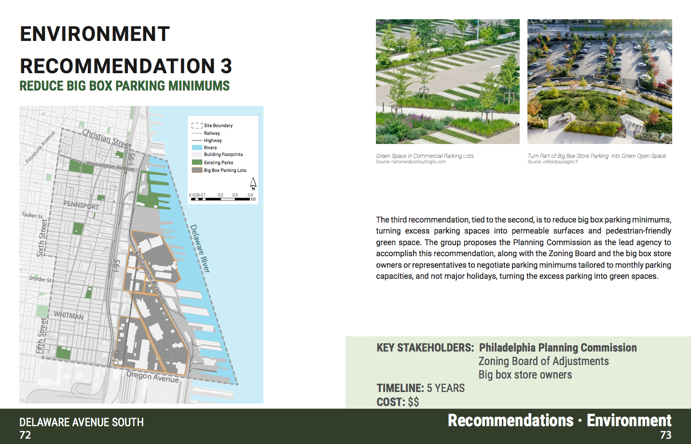
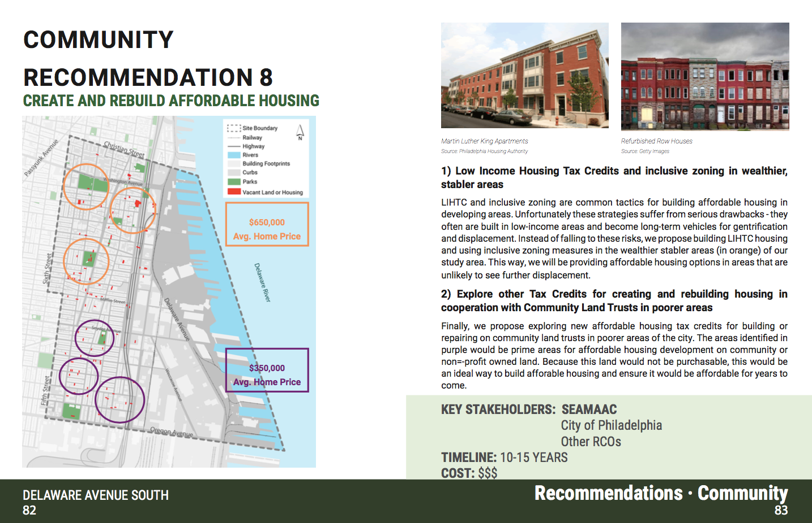
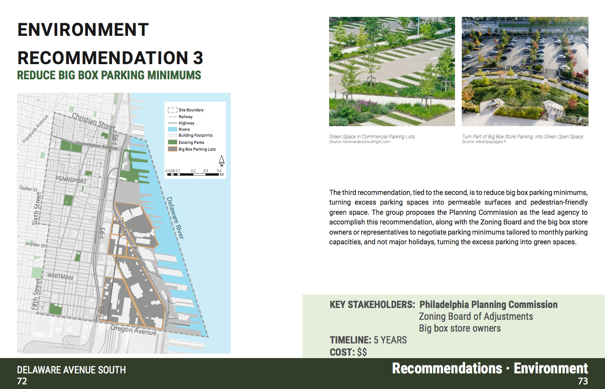
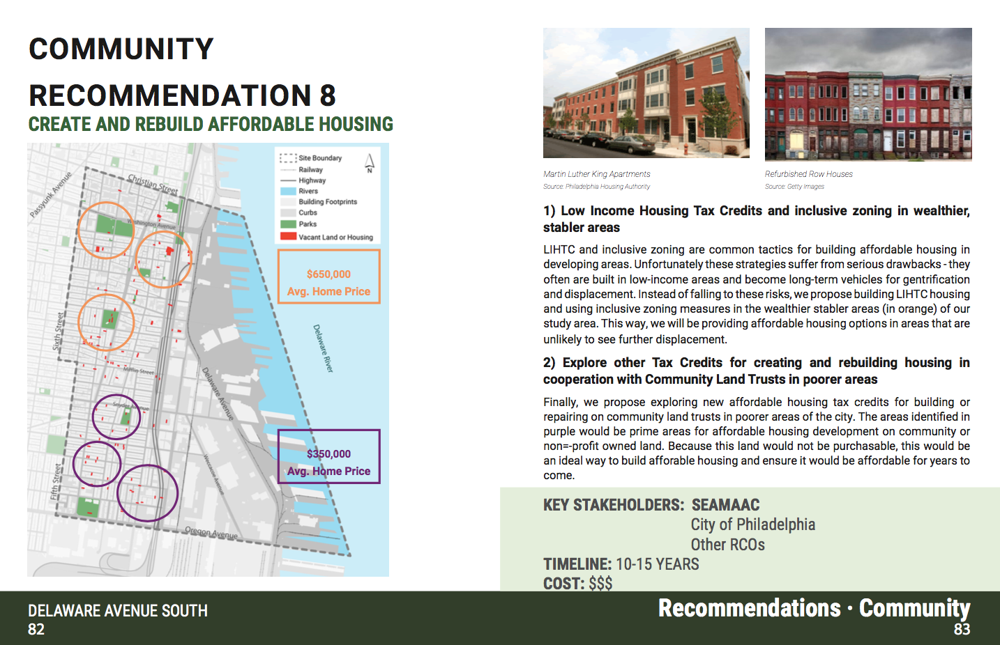

Overview
This is a project for CPLN 600 Planning Workshop at University of Pennsylvania in Spring 2020. From January to May 2020, my group of seven city planning students (Zining Chen, Lily Cheng, Gil Lehmann, Shiyu Mao, Han Qiao, Paulina Safarian, Cade Underwood) coming from different concentrations and our group instructor (Rich Freeh), together completed a book that contains our analysis on the current condition of the Delaware Avenue South area in Philadelphia as well as recommendations for future development through the lenses of environmental resiliency, community building, and transportation connectivity.
My Role
I was mainly responsible for the transportation sections of the book, including conducting data analysis on travel behavior of the study area, identifying issues and opportunities of current transportation infrastructures and evaluating how past and future projects will affect residents' everyday travel.
Project Timeline
Phase 1: Existing Condition
We first analyzed the current condition of our study area through
site visits, attending community meetings, conducting interviews with local organizations
and collecting demographic, economic, housing and transportation related data.
Phase 2: Issues and Opportunities
Then we identified issues and opportunities in our study area according to
the four key areas: community development, environmental resiliency, housing affordability and
transportation connectivity.
Phase 3: Alternatives
In the third phase, we came up with three mutually exclusive and bold
alternative development plans for the study area, each of which focuses
on addressing one of the goals: 1.environmental resiliency 2.community development
3.transportation connectivity.
Phase 4: Recommendations
In the end, we evaluated the importance and urgency of recommendations
from each of the three alternatives, and created a list of 12 recommendations
on the future development of the study area.
Book Page Examples
 


